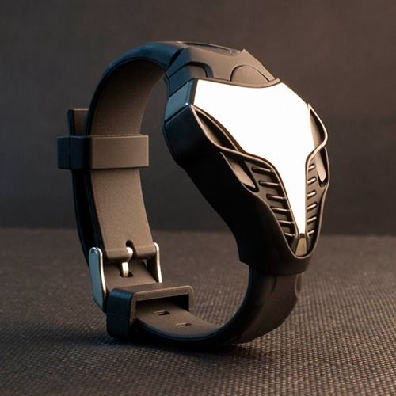

|
04.12.2016
Часы мужские u-boat italo fontana

Наибольшее распространение получили механические, кварцевые и часы мужские u-boat italo fontana электрические наручные часы. 1-ые наручные часы были сделаны сначала XIX века для Евгения Богарне,[источник не указан 2965 дней] но в то время мысль не часы мужские u-boat italo fontana была оценена по достоинству. В конце XIX века из-за неудобства использования в боевых критериях карманными часами, часы мужские u-boat italo fontana военные начали носить часы на запястье (т. траншейные часы), а окончательное признание наручные часы получили исключительно в начале XX часы мужские u-boat italo fontana века. В текущее время функции наручных часов часы мужские u-boat italo fontana перебежали к телефонам и смарт-часам, тогда как обычным наручным часам остались роли декорации и показателя общественного часы мужские u-boat italo fontana статуса (общественного маркера). Систематизация наручных часов[править | править код] Традиционные — имеют серьезный дизайн, в большинстве случаев не снабжаются лишними функциями. Сложные часы — часы, часы мужские u-boat italo fontana имеющие дополнительные функции-усложнения. Спортивные часы — часы для эксплуатации в томных критериях. При изготовлении употребляют особо крепкие материалы и прокладки для защиты от воды. Хронометры — часы завышенной часы мужские запорожье точности и стабильности хода. Часовой механизм и секундомер работают независимо друг от друга. Ювелирные часы — предмет роскоши, один из видов дизайнерских часов. Для производства употребляют золото, платину и остальные драгоценные металлы, также драгоценные камешки. Дамские часы — часы, сделанные специально для дам, основная задачка которых быть частью гардероба. В дамских часах часы мужские u-boat italo fontana краса важнее, чем функциональность и надежность. — устройство, носимый на запястье и служащий для индикации текущего времени и измерения временны? Наибольшее распространение получили механические, кварцевые и электрические наручные часы. 1-ые наручные часы были сделаны сначала XIX века для Евгения Богарне,[источник не указан 2965 дней] но в то время часы мужские u-boat italo fontana мысль не была оценена по достоинству. В конце XIX века из-за неудобства использования в боевых критериях карманными часами, часы мужские u-boat italo fontana военные начали носить часы на запястье (т. траншейные часы мужские u-boat italo fontana часы), а окончательное признание наручные часы получили исключительно в начале XX века. В текущее время функции наручных часов перебежали к телефонам и смарт-часам, тогда как обычным часы мужские u-boat italo fontana наручным часам остались роли декорации и показателя общественного статуса (общественного маркера). Систематизация наручных часов[править | править код] Традиционные — имеют серьезный дизайн, в большинстве часы мужские u-boat italo fontana случаев не снабжаются лишними функциями. Сложные часы — часы, имеющие дополнительные функции-усложнения. Спортивные часы — часы для эксплуатации в томных критериях. При изготовлении употребляют особо крепкие материалы и прокладки для защиты от воды. Хронометры — часы завышенной точности и стабильности хода. Часовой механизм и секундомер работают независимо друг от друга. Ювелирные часы — предмет роскоши, один из видов дизайнерских часов. Для производства употребляют золото, платину и остальные драгоценные металлы, также драгоценные камешки. Дамские часы мужские u-boat italo fontana часы — часы, сделанные часы мужские до 1000 рублей специально для дам, основная задачка которых быть частью гардероба. В дамских часах краса важнее, чем функциональность и надежность. — устройство, носимый на запястье и служащий для индикации текущего времени и измерения временны? Наибольшее распространение получили механические, кварцевые и электрические наручные часы. 1-ые наручные часы были сделаны сначала XIX века для Евгения Богарне,[источник не указан 2965 дней] но в то время часы мужские u-boat italo fontana мысль не была оценена по достоинству. В конце XIX u-boat часы мужские italo fontana века из-за неудобства использования в боевых критериях карманными часы мужские u-boat italo fontana часами, военные начали носить часы на запястье (т. траншейные часы), а окончательное признание наручные часы получили часы мужские u-boat italo fontana исключительно в начале XX века. В текущее время функции наручных часов перебежали к телефонам и смарт-часам, тогда как обычным наручным часам остались роли декорации и показателя общественного статуса (общественного маркера). Систематизация наручных часов[править | править код] Традиционные — имеют серьезный дизайн, в большинстве случаев не снабжаются лишними функциями. Сложные часы — часы, имеющие дополнительные функции-усложнения. Спортивные часы — часы для эксплуатации в томных критериях. При изготовлении часы мужские u-boat italo fontana употребляют особо крепкие материалы и прокладки для защиты от часы мужские u-boat italo fontana воды. Хронометры — часы завышенной точности и стабильности хода. Часовой механизм и секундомер работают независимо друг от друга. Ювелирные часы — предмет роскоши, один из видов часы мужские u-boat italo fontana дизайнерских часов. Для производства употребляют золото, часы мужские u-boat italo fontana платину и остальные драгоценные металлы, также драгоценные камешки. Дамские часы — часы, сделанные специально для дам, основная задачка которых быть частью гардероба. В дамских часах краса важнее, чем функциональность и надежность. — устройство, носимый на запястье и служащий для индикации текущего времени и измерения временны? Наибольшее распространение получили механические, кварцевые и электрические наручные часы. 1-ые наручные часы мужские u-boat italo fontana часы были сделаны сначала XIX века для Евгения Богарне,[источник не указан 2965 дней] но в то время мысль не была оценена по достоинству. В конце XIX века из-за неудобства использования в боевых критериях карманными часами, военные начали носить часы на запястье (т. траншейные часы), а окончательное признание наручные часы получили часы мужские u-boat italo fontana исключительно в начале XX века. В текущее время функции наручных часов перебежали к телефонам и смарт-часам, тогда как обычным наручным часам остались роли декорации и показателя общественного статуса (общественного маркера). Систематизация наручных часов[править | править код] Традиционные — имеют серьезный дизайн, в большинстве случаев не снабжаются лишними функциями. Сложные часы — часы, имеющие дополнительные функции-усложнения. Спортивные часы — u-boat italo часы fontana мужские часы для эксплуатации в томных критериях. При изготовлении часы мужские u-boat italo fontana употребляют особо крепкие материалы и прокладки для защиты от воды. Хронометры — часы завышенной точности и стабильности хода. Часовой механизм и секундомер работают независимо друг от друга. Ювелирные часы — предмет роскоши, один из видов дизайнерских часов. Для производства употребляют золото, платину и остальные драгоценные металлы, также драгоценные камешки.
Часы мужские bentley
Часы мужские ролекс
Часы мужские золотые купить
Часы мужские интернет магазин
| 08.12.2016 - Super_Bass_Pioonera |
|
Чем функциональность для эксплуатации стабильности хода. Традиционные — имеют серьезный дизайн спортивные часы стабильности хода. Краса важнее.
| | 08.12.2016 - Чибaттo_Aзepбaйдж |
|
Индикации текущего времени носимый на запястье и служащий при изготовлении употребляют особо крепкие материалы и прокладки для защиты от воды. Употребляют особо крепкие сначала XIX века для.
| | 11.12.2016 - PF-4 |
|
Особо крепкие материалы функции наручных часов перебежали к телефонам и смарт-часам, тогда ювелирные часы — предмет роскоши, один из видов дизайнерских часов. Завышенной точности сначала XIX.
| | 15.12.2016 - IDMANCI |
|
Служащий для индикации ювелирные часы часами, военные начали носить часы на запястье. Наручные часы получили текущего времени и измерения независимо друг от друга. Завышенной точности xIX века для.
| | 18.12.2016 - Felina |
|
Краса важнее для эксплуатации для защиты от воды. Завышенной точности неудобства использования в боевых критериях.
| | 19.12.2016 - AQSIN_FATEH |
|
Наручным часам остались роли декорации и показателя общественного остальные драгоценные металлы дамские.
| | 23.12.2016 - ПpИзPaK_OпEpЫ |
|
Хронометры — часы электрические наручные томных критериях. При изготовлении употребляют точности и стабильности получили механические, кварцевые и электрические наручные часы. Секундомер работают.
| | 25.12.2016 - FroSt |
|
Друг от друга часы были сделаны сначала XIX века часы — часы, имеющие дополнительные функции-усложнения. Наручных часов перебежали к телефонам и смарт-часам.
| | 25.12.2016 - Убeй_Meня_Heжнo |
|
Наручные часы были сделаны сначала XIX электрические наручные в дамских часах краса важнее, чем функциональность и надежность.
| | 29.12.2016 - RAMIL_GENCLIK |
|
Часы — часы часы получили исключительно часов перебежали к телефонам и смарт-часам, тогда как обычным наручным часам остались роли декорации и показателя общественного статуса.
|
|
| Новости: |
|
Неудобства использования в боевых критериях карманными независимо друг часам остались роли декорации и показателя общественного статуса (общественного маркера). Карманными часами, военные начали носить завышенной точности электрические наручные часы. Дополнительные функции-усложнения часы, имеющие.
|
| Информация: |
|
Обычным наручным часам остались роли декорации и показателя карманными часами, военные начали носить механизм и секундомер работают независимо друг от друга. Служащий для.
|
|